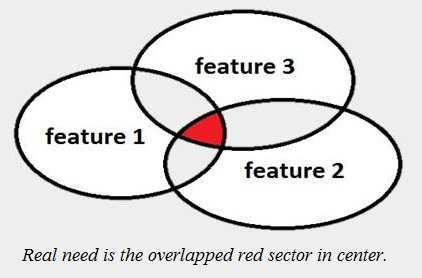
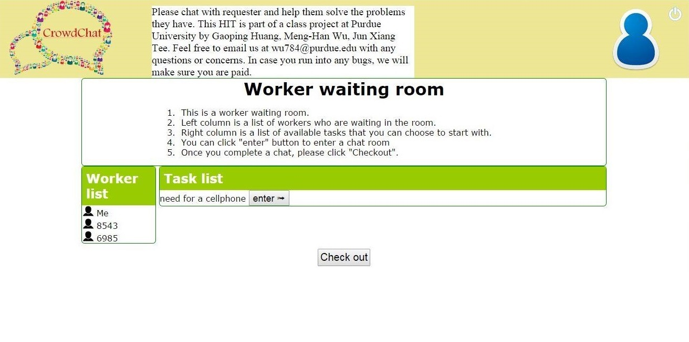
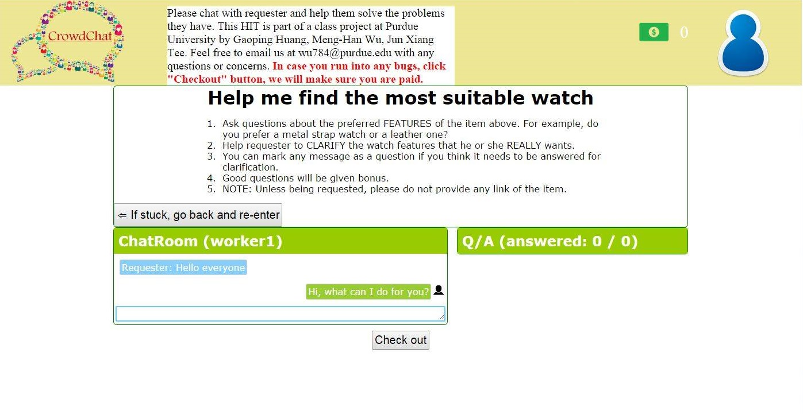
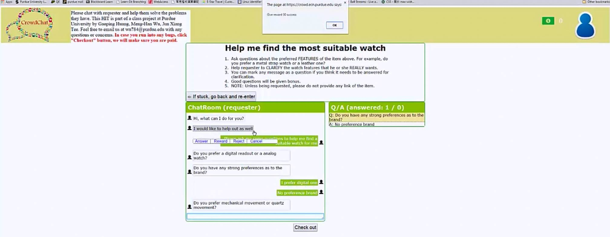
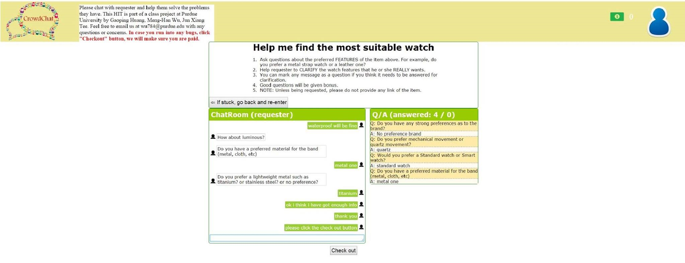

Crowdsourcing is often exploited to generate diverse suggestions or to make decisions for requesters who intend to buy a certain item. Occasionally, requesters do not know their real need. Existing crowdsourcing platforms, however, are likely to provide only “guesses”, which is inefficient. Hence, we introduce a new system that helps to find the preferred features. By culling unsuitable features, we can approach to the real need quickly, accurately, and affordably.

Demo Video
Introduction
Existing Problem
People do shopping every day. When purchasing something expensive or important, it is common that most people do not have a clear understanding of their real need. Money may be spent on purchasing something that is unsuitable or even unnecessary. Else, a significant portion of the time may be spent to obtain others' opinions to make the decision.
There is a need of a platform that allows the people to effectively talk about their need in purchasing something. Many people do not have experienced buyers or domain experts to give them suggestions of which items to buy, let alone to determine whether the purchase is necessary. Sometimes, they need fresh pairs of eyes in evaluating their purchase plan too.
Design
To ensure the problem can be solved efficiently, we develop CrowdChat, a crowdsourcing program that allows requester to discuss about his or her real need of an item with up to four(4) workers in real-time fashion. We are strong proponents that active brainstorming is crucial in generating quality ideas and suggestions. It is undeniable that the requester can obtain valuable information about an item before purchasing it via Internet. In fact, there will be many comprehensive reviews of the item, and it is not hard for the requester to make his or her purchase decision based on the reviews. However, despite the abundant reviews, the requester sometimes may not be able to find a review that is written by someone with similar background or need. He or she has to make vague guess or follow the intuition, which sometimes turns out to be irrational and inappropriate.
CrowdChat aims to dive deeper into the requester's purchase intention by providing a platform that challenges the requester to rethink his or her purchase preference, or even the need to buy the item. We do not want the requesters to guess anymore. Instead, we want them to know what they really want (or do not want) before purchasing something. CrowdChat serves the requester best when he or she plans to buy something unfamiliar. For instance, new parents who are not familiar with baby stroller will be able to obtain valuable insights from workers who have already been parents for a long time. The program provides a real-time mechanism for the new parents to interact with the experienced parents affordably, saving time and effort in finalizing their purchase decision. By having discussion with the workers, the requester will be able to build up a brand new perspective towards his or her purchase plan. After all, it does not hurt to discuss about the purchase with some other people before the purchase.
Related Works
Before designing CrowdChat, we referred to some existing works below for inspiration.
To solve the tasks posted by future CrowdChat’s requesters, we obviously need human processing power to carry out complicated, open-ended instructions.
According to James Surowiecki (2004) in his book titled “The Wisdom of Crowds”, it is possible for collective intelligence to triumph against experts’ opinions via proper management and selection of crowd workers. He suggested some attributes of "wise crowds" that we adhered closely throughout design process of CrowdChat.
In the beginning, we planned to implement a framework that was able to handle "complex, collaborative, and sustainable" tasks.
Although Find-Fix-Verify pattern introduced by Soylent was very cool, we thought that integration of both generation and review stages would be a must for CrowdChat to perform efficiently.
Before designing chat room system for our program, we also referred several creative designs such as a design based on Android Bluetooth and a design based on an Emotion Estimation module for ideas.
Next, we learnt how to design the chat rooms in a way that could retain users, especially the workers.
We introduced some gaming features into CrowdChat so that the workers have a sense of achievement. To accomplish this, we implemented reward and reputation systems for the workers.
We also found out that having good action and dialog models was vital in producing user interface that encouraged interaction.
Furthermore, by examining a crowd-powered translation system and an emergency social media response system, we had a richer understanding on how the workers could collaborate with each other.
Lastly, to maintain good relationship between the requesters and workers, we also referred some guidelines on how to utilize the crowdsourced labor ethically.
CrowdChat improves real-time features of the existing works, and overcomes some of their weaknesses. However, its main features are best summarized by the three programs below:
1. Chorus
Chorus, a crowd-powered conversational assistant, leverages crowd workers behind the scene to produce and vote on best responses. Although it can provide relevant, on-topic responses, it does not provide the workers sufficient level of interaction with the requester. To be precise, the requester obtains only the best response without knowing who proposes the response and how it is chosen. He or she has no idea of what are the alternative responses too. In the end, the best response only reflects what the workers perceive the requester wants. So, why don't we expose the process in obtaining the best response to the requester? This will allow a more intimate interaction, which is helpful in unravelling the real need of the requester. This is exactly what CrowdChat is doing. Bear in mind that the requester may not even know his or her real need before participating in conversation with the workers to obtain inspiration.
2. VizWiz
CrowdChat is partially inspired by a client interface named VizWiz. VizWiz serves blind and low-vision people in understanding their environment by providing a mechanism to ask questions to the workers and receive answers in nearly real-time fashion for a low cost. Ability of the interface to provide nearly real-time answers to the requesters is vital in solving their daily life problems. When developing CrowdChat, we thought to avoid conventional limitations of forums or product review systems as it can take a long time to obtain any response in the platforms. We want something consistently fast, something that is capable in solving the requesters' problem immediately. VizWiz serves as an inspiration for us that what we want is a real-time feature similar to its'. In fact, it turns out that having a real-time group chat system is exactly what we want. It allows the requesters to participate in idea generation process, and let them figure out what they really want themselves.
3. Crowds in Two Seconds
Reward system of CrowdChat is inspired by retainer model of real-time crowd-powered interfaces outlined in the paper titled "Crowds in Two Seconds: Enabling Realtime Crowd-Powered Interfaces". The model pays the workers a small sum of money to wait. This ensures that the workers can perform new tasks as soon as they are available. We are clear that CrowdChat, like other real-time crowdsourcing systems, has to pay the workers a small compensation in return of their time spent for waiting in order to function well. We want the workers to be ready as soon as a new task is created. This elevates efficiency, which is one of the core values of our program.
Implementation
Our implementation can be classified into 3 parts: waiting room, chat rooms, and reward and reputation systems.
1. The Waiting Room
The waiting room shows a list of chat rooms for the workers to join. It is a big room that accommodates all the idle workers (i.e. workers who currently do not participate in any conversation). Due to nature of real-time chat, sometimes, there may be no chat room available for the workers when they log into the system. During this moment, the waiting room will serve as an anteroom for the idle workers to wait for next availability and as a portal to enter a chat room of their choice.

Figure 1: The waiting room comprises of two compartments: 1) showing existing tasks (in form of chat rooms) posted by the requesters, and 2) showing list of workers waiting in the room.
The waiting room comprises of two (2) compartments: one for showing existing tasks (in form of chat rooms) posted by the requesters, and another for showing list of workers waiting in the room. Both compartments will update accordingly based on activities of the requesters and workers. When a worker enters a chat room, his or her ID will be removed from the waiting room.
2. The Chat Rooms
The chat rooms are small, independent rooms that provide chat facilities among the requester and workers. As main communication channel, a chat room can accommodate the requester and at most four (4) workers. Having only 5 members in a chat room prevents the room from being overcrowded and reduces spam messages. It also ensures every member can play an active and significant role in a particular conversation. To preserve conversation quality, there is also a constraint of minimum input length of 5 words for each conversation message. If a worker quits the chat room in middle of the conversation, another worker will be able to fill the empty slot. A chat room comprises of three (3) compartments: a headline showing task instructions and requirements, a left-positioned chat window for performing the chat activity, and a right-positioned board showing question / answer pairs generated from the conversation.

Figure 2: A chat room comprises of three compartments: 1) a headline showing task instructions and requirements, 2) a left-positioned chat window for performing the chat activity, and 3) a right-positioned board showing question/answer pairs generated from the conversation.
When the requesters and workers click on a chat message, they can mark it as a question, unmark it, or cancel their action. On top of this, the requesters have the options to answer (accept) or reject the message. If a requester or a worker marks a message as a question, the message will be highlighted. If the requester answers the question, the question with its answer will be pushed to the right board as a question / answer pair. By doing this, everyone in the chat room will be able to obtain a clear picture of key points of the conversation so far. If the requester rejects a message (probably due to its irrelevance or it is a spam), the message will be stroked. The worker posting the rejected message will be penalized.
3. The Reward and Reputation Systems
CrowdChat implements a rewards system in term of points to determine amount of monetary rewards for each worker participating in the conversations. 10 points equal to 1 cent in US currency ($0.01).

Figure 3: An agreed message will be rewarded with 10 points (good), 30 points (great), or 50 points (splendid).
In the waiting room, the system will generate 1 point to a worker for each minute spent by him / her in the room. However, the waiting points can only be redeemed after a requester approves the worker's conversation message in a chat room. The waiting points can be accumulated up to 5 points. Entering and quitting the waiting room and chat rooms without redeeming the waiting points will not reset the points to 0. The waiting points will only reset after the redemption. In the chat rooms, the system will generate 1 point for any posted conversation message. In case a message is rejected, the point will be taken away. The requester has the option to agree a message. An agreed message will be rewarded with 10 points (good), 30 points (great), or 50 points (splendid).
Apart from this, CrowdChat also implements a reputation system in term of score to preserve performance quality of workers. Initial reputation score for each worker is 0. When a worker's conversation message is agreed, his or her reputation score will be increased by 1. On the other hand, his or her reputation score will be reduced by 1 if the message is rejected. A worker will be blocked if he or she has a reputation score of -10.
Experiments & Results
We conducted several experiments on Amazon Mechanical Turk to see how well CrowdChat performed in reality. We wish to have a closer look on how the conversations would be carried out between the requesters and workers, and whether the workers would be helpful to the requesters or not.

Figure 4: By pinpointing that good questions would be rewarded with bonuses, most questions asked were relevant, clear, and thought-provoking.
Let us run through one of the experiments to show how well our program could work. As a requester, we posted a HIT that asked the workers to find the most suitable watch for us. The workers were required to ask questions about our preferred features for the watch. For instance, they could ask us what type of strap that we wanted. The goal was to help us to clarify the watch features that we really wanted. To prevent the workers from posting long website links of watches, we also posted a reminder asking them not to do so unless being requested. To attract the workers, we set the basic reward of $0.40, and also gave bonuses for good, thought-provoking questions.
Three (3) workers took part in the conversation. The conversation lasted for around (ten) 10 minutes. It could go longer, but we ended it after obtaining enough information. Throughout the conversation, the workers used formal English to communicate. They were courteous, and none of them posted any conversation message that was labelled as spam. The workers asked eleven (11) questions in total, in which we answered ten (10) of them, leaving a vague question unanswered. Only four (4) question / answer pairs were formed as we thought only the four questions were of high importance. In general, the questions asked were of high quality, touching a wide ranges of watch features. To name a few, they asked about watch type (digital or analog), brand preference, size, movement (mechanical or quartz), and even down to the very detailed specifications such as preferred metal weight.
Discussion
We were surprised by how cooperative and courteous the workers were. By pinpointing that good questions would be rewarded with bonuses, most questions asked were relevant, clear, and thought-provoking. It convinced us that our original intention to develop CrowdChat was realistic - our program was able to solve needs of the requesters in real-time fashion. In general, most of the workers did not post any irrelevant message or spam.
It was also interesting to know that a worker might answer another worker's question on behalf of the requester if he or she thought that enough information was given. In the experiment mentioned in "Experiments & Results Section" above, one of the workers posted a message ran "I guess the requester would prefer quartz, because he prefer digital one". It turned out that we did prefer quartz watches later on. The ability of some workers to provide useful inferences based on previous answers of the requesters showed that some workers did pay close attention to the conversation. At least, we were confident that not all workers were forced to behave passively during the conversation due to design pitfalls of the system.
The setting of maximum five (5) members in a chat room proved to be feasible. From our experiments, the conversation quality was at least satisfactory. We did not feel the chat room was overcrowded. We were able to respond to almost all questions asked on time.
In overall, we were satisfied with the experiments conducted. They provided valuable ideas for improvement. We are confident that CrowdChat will perform better with some optimizations done to the existing system.
Future Works
For our future works, first and foremost, we will implement a clean UI page listing all new tasks posted by the requesters a while ago. The UI page will serve as a bulletin board of recently created tasks so that the workers can be informed as soon as possible of the task availability, reducing time gap between task posting and acceptance. This will reduce waiting expenses incurred on the requesters.
Second, we will implement a statistical system to keep track total number of reward points awarded during a conversation session. The system will be able to generate graphs of historical reward behavior of a requester. In fact, with the statistics, we will be able to take into account reward behavior of the requesters in determining their reputation score. For example, the requesters who are more generous will be assigned a higher reputation score so that he or she will obtain attention from more workers.
Third, we will implement a feedback feature that serves as a channel for both the requesters and workers to voice their opinions towards CrowdChat. It will also simplify process to resolve disputes due to unfair treatment or misunderstanding. We believe fast replies to the requesters and workers' feedback will retain old users and attract new ones to use our program.
Lastly, we will also continue working on the reward and reputation systems. Note that they are not yet completed for the project v1.0 release. In this regard, we will conduct more experiments on Amazon Mechanical Turk to understand effect of the reward and reputation systems towards conversation quality. Depending on our findings, we will rewrite our algorithms to better calculate the reward points and reputation scores.
{kind=link}
{kind=link}
{kind=link}
{kind=link}